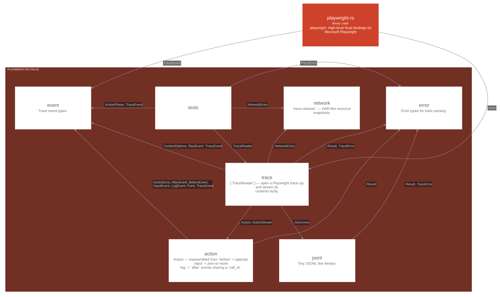

playwright-rs-trace
Programmatic parser for [Playwright][pw] trace zip files (trace formats v8 and v9, v9 from 0.2.0; verified against traces recorded by the bundled driver, playwright@1.63.0).

Modules
Used by
| Kind | Source | Items | Technology |
|---|---|---|---|
| uses | playwright_rs | playwright_rs_trace |
action playwright_rs_trace.action
Action — reassembled from before + optional input + zero-or-more
log + after events sharing a call_id.
Uses
| Kind | Target | Items | Technology |
|---|---|---|---|
| names | playwright_rs_trace.error | Result | |
| names | playwright_rs_trace.event | ActionError, AfterEvent, BeforeEvent, InputEvent, LogEvent, Point, TraceEvent |
Used by
| Kind | Source | Items | Technology |
|---|---|---|---|
| constructs | playwright_rs_trace.trace | Action, ActionStream |
error playwright_rs_trace.error
Error types for trace parsing.
Used by
| Kind | Source | Items | Technology |
|---|---|---|---|
| names | playwright_rs_trace.action | Result | |
| constructs | playwright_rs_trace.jsonl | Result, TraceError | |
| uses | playwright_rs_trace.tests | TraceError | |
| constructs | playwright_rs_trace.trace | Result, TraceError |
event playwright_rs_trace.event
Trace event types.
Used by
| Kind | Source | Items | Technology |
|---|---|---|---|
| uses | playwright_rs.tests | TraceEvent | |
| names | playwright_rs_trace.action | ActionError, AfterEvent, BeforeEvent, InputEvent, LogEvent, Point, TraceEvent | |
| names | playwright_rs_trace.tests | ActionPhase, TraceEvent | |
| names | playwright_rs_trace.trace | ContextOptions, RawEvent, TraceEvent |
jsonl playwright_rs_trace.jsonl
Tiny JSONL line iterator.
Uses
| Kind | Target | Items | Technology |
|---|---|---|---|
| constructs | playwright_rs_trace.error | Result, TraceError |
Used by
| Kind | Source | Items | Technology |
|---|---|---|---|
| constructs | playwright_rs_trace.trace | JsonLines |
network playwright_rs_trace.network
trace.network — HAR-like resource snapshots.
Used by
| Kind | Source | Items | Technology |
|---|---|---|---|
| names | playwright_rs_trace.tests | NetworkEntry | |
| constructs | playwright_rs_trace.trace | NetworkEntry |
tests playwright_rs_trace.tests
Uses
| Kind | Target | Items | Technology |
|---|---|---|---|
| uses | playwright_rs_trace.error | TraceError | |
| names | playwright_rs_trace.event | ActionPhase, TraceEvent | |
| names | playwright_rs_trace.network | NetworkEntry | |
| calls | playwright_rs_trace.trace | TraceReader |
trace playwright_rs_trace.trace
[TraceReader] — open a Playwright trace zip and stream its
contents lazily.
Uses
| Kind | Target | Items | Technology |
|---|---|---|---|
| constructs | playwright_rs_trace.action | Action, ActionStream | |
| constructs | playwright_rs_trace.error | Result, TraceError | |
| names | playwright_rs_trace.event | ContextOptions, RawEvent, TraceEvent | |
| constructs | playwright_rs_trace.jsonl | JsonLines | |
| constructs | playwright_rs_trace.network | NetworkEntry |
Used by
| Kind | Source | Items | Technology |
|---|---|---|---|
| calls | playwright_rs.tests | open | |
| calls | playwright_rs_trace.tests | TraceReader |